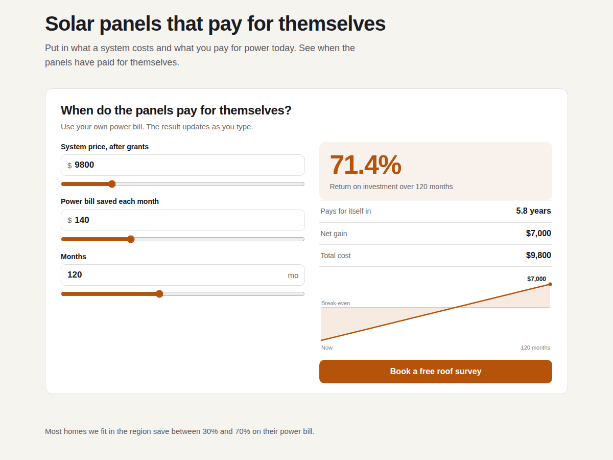

ROI Calculator
Return on investment and payback for visitors
- ROI, payback time and net gain as visitors type
- Payback mode or invested and got back mode
- Your starting numbers, labels, currency, colours
- Compare two options with a chart on Premium

What it does
A prospect who sees "pays for itself in 15 months" next to your price is having a different conversation with you. ROI Calculator puts that number on your page, worked out from the visitor's own figures.
It has two modes. Payback mode asks for an up-front cost, a monthly saving or extra revenue, and an optional monthly running cost, then shows the ROI over the months you pick, the payback time, net gain and total cost. Return mode takes the amount invested, the amount got back and the years held, and shows the ROI, the yearly ROI and the net gain. The result changes as visitors type or drag a slider.
In the editor's Settings panel you set the starting numbers, title, intro, the label of every box, the currency and its position, colours and font. New calculators open with sample numbers, so the page never shows an empty box. It fits narrow phone screens and works with screen readers. Visitors' numbers stay in their browser.
The free plan has the full calculator with a small credit line. Premium lets visitors compare two options side by side, adds a chart of the money over time and a button under the result that links to your quote or booking page, and removes the credit line.
Price
Free
- The full calculator in both modes
- Your numbers, labels and currency
- Your colours and font
- Works on phones and screen readers
Premium
$5/month, $48/year ($4/month billed yearly)
- Compare two options side by side
- Chart of the money over time
- Button under the result to your page
- No credit line under the calculator